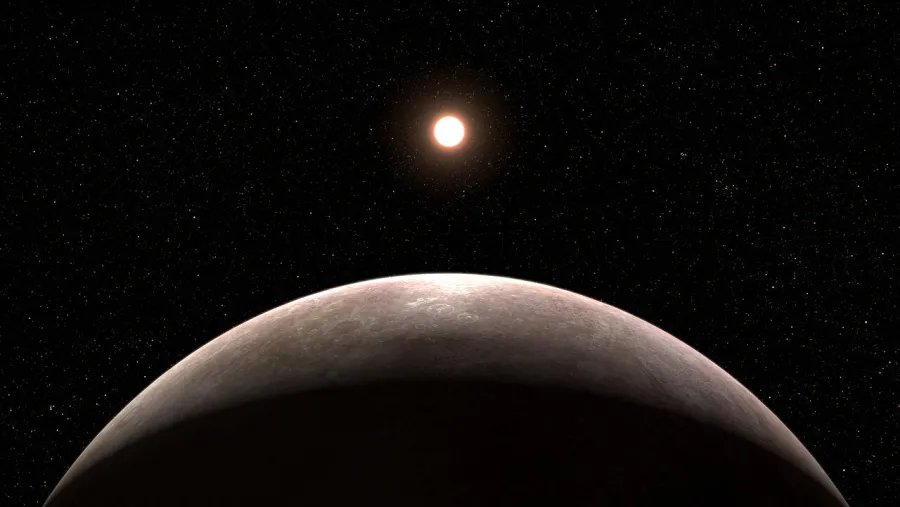

11. Januar 2023
LHS 475 b: erster vom Webb-Teleskop bestätigter Exoplanet
Erstmals bestätigte das James-Webb-Weltraumteleskop die Existenz eines Exoplaneten. Hinweise auf LHS 475 b stammten vom NASA-Satelliten TESS; dem Spektrografen NIRSpec genügten zwei Transitbeobachtungen für den Nachweis. Der Gesteinsplanet hat 99 Prozent des Erddurchmessers und umrundet seinen Roten Zwerg in nur zwei Tagen. Er ist 41 Lichtjahre entfernt.
Ob er eine Atmosphäre besitzt, blieb offen. Eine dichte, von Methan dominierte Hülle wie beim Saturnmond Titan schließen die Daten aus; eine reine Kohlendioxid-Atmosphäre wäre dagegen noch möglich. Der Planet ist einige Hundert Grad wärmer als die Erde.
Quelle: ESA/Webb: "Webb Confirms Its First Exoplanet", 11.01.2023